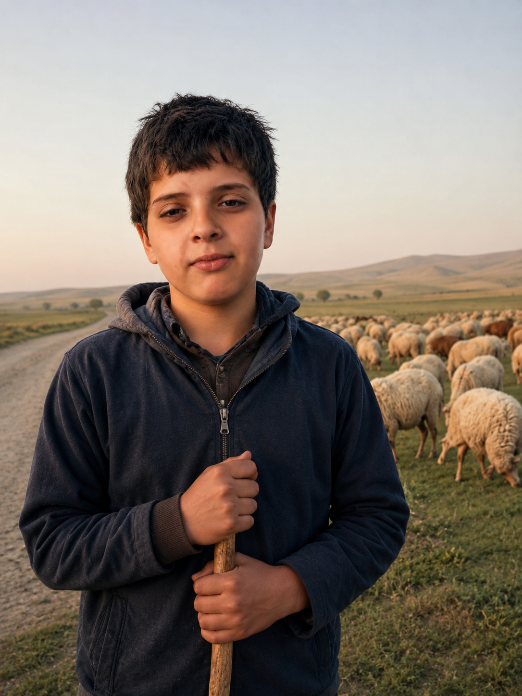
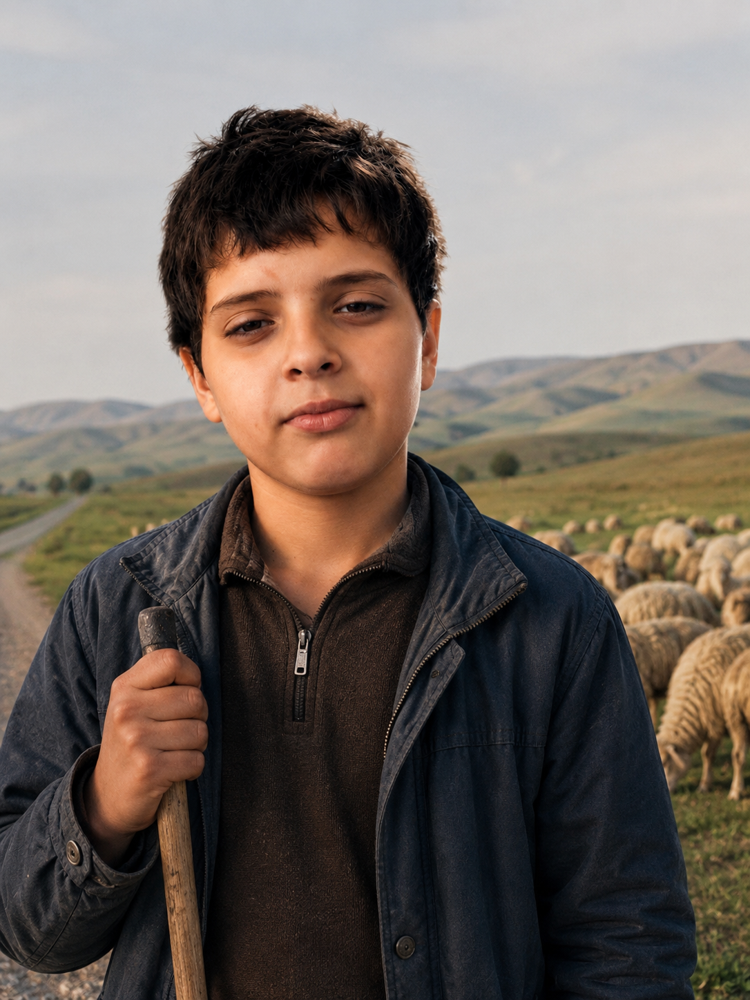

Ответственность
Стадо должно быть под присмотром.
Кизлярский район · выпас и присмотр
Выпас, присмотр и сопровождение КРС, овец и коз в Кизлярском районе.
Работаю спокойно, внимательно и ответственно. Помогаю частным владельцам, личным хозяйствам и небольшим фермам с выпасом и присмотром за стадом.


О человеке
Меня зовут Рашид. Я помогаю с выпасом и присмотром за скотом в сёлах Кизлярского района. В этой работе главное — быть внимательным, спокойным и ответственным. Нужно следить за стадом, понимать поведение животных, учитывать погоду, дорогу и состояние пастбища.
Я ценю честный труд, порядок и доверие людей, которые поручают мне своё хозяйство.
Стадо должно быть под присмотром.
С животными важно работать без резкости.
Нужно замечать, если животное отстало или ведёт себя необычно.
В сельской работе важны точность и порядок.
Что входит в работу
Можно договориться о разовой, регулярной или сезонной помощи.
Дневной выпас коров и телят с контролем движения стада.
Присмотр за мелким рогатым скотом на пастбище.
Помощь при перегоне животных между участками, дворами и пастбищами.
Помощь с выводом и возвращением животных.
Регулярный выпас по договорённости на сезон.
Дополнительные задачи, связанные с уходом за животными.
Для кого
Для тех, кто держит коров, овец или коз и нуждается в помощи с выпасом.
Для семей, которым нужна регулярная или сезонная поддержка.
Для хозяйств, которым нужен ответственный помощник для работы со стадом.
Можно обсудить индивидуальные условия под конкретное количество животных.
Подход
Главное в этой работе — спокойствие, внимание и честное отношение к порученному хозяйству.
Важно следить, чтобы животные не отбивались и не уходили с маршрута.
С животными нельзя работать грубо и резко.
Нужно замечать усталость, беспокойство или необычное поведение.
Выпас и возвращение должны проходить вовремя.
Хозяин должен понимать, кому доверяет своё хозяйство.
Опыт
Фотографии
Галерея помогает показать спокойную атмосферу сельской работы.
Где работаю
Возможен выпас и помощь в хозяйствах в сёлах Кизляра и Кизлярского района. Условия зависят от расстояния, количества животных и графика.
Доверие
Для реального сайта эти примеры лучше заменить настоящими отзывами или оставить пометку “пример отзыва”.
“Ответственно относится к работе, выходит вовремя и внимательно следит за стадом.”
Владелец хозяйства“Спокойный, аккуратный, животные под присмотром.”
Частный владелец скота“Можно договориться по графику, всё объясняет просто и понятно.”
Житель селаОтветы
С коровами, телятами, овцами и козами.
Да, возможна разовая помощь по договорённости.
Да, регулярный выпас обсуждается индивидуально.
От количества животных, расстояния, графика и длительности работы.
Лучше позвонить или написать в мессенджер.
Быстрая заявка
Ответьте на несколько вопросов — в конце квиз соберёт данные в одну заявку и отправит их в Telegram-бот.
Связь
Чтобы обсудить условия, напишите или позвоните. Лучше заранее указать село, вид животных, количество голов и нужный график.
Не указывайте в заявке лишние личные данные. Для обсуждения условий достаточно села, вида животных и количества голов.